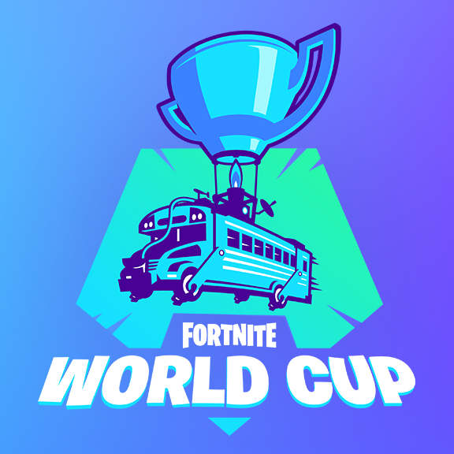

Comp page
In fortnite there was not a comp starting for fortnite, they would announced their first major tournment the Fortnite World Cup. This world cup was everything, people would not hop off the game because they were practing to try
to get a spot and the world cup and the prize pool was $30 million. They would pick some players the players that quilfed from each region to come to new york to compete in the finals live.
me myself tried to qualify but i couldn't, it was just to hard to qualify because of those kids that would skip school to do that.
After world cup ended they would intrdouce FNCS, this was just like world cup but online and smaller prize pool and you still had to quailfy for all tournments to play in the finals so when people heard the news of new tournments people would get the best
teamates and try to wimn. I have also played fncs, which i made it to the 3 round(i was so close to the finals) but fell out short because we came 15 and to qual for finals it was top ten. But is still did good.
Fncs would only happen once every season so the pro players would get board and just quit so fortnite made Cash Cups
Cash Cups are really good thing that fortnite did, these cash cups would work like fncs but easier. there would be solos,duos,trios cash cups and to win money in them you would habe to get in the quailfying range and then you were in the finals, there was only one round of qauilfying and then you were in to win money
It is really good that they did that. They still have these tournments till to this day. Hope this helped you know about the competive side of fortnite, i dont know maybe if you try fortnite you could maybe make some money
competive-tracker
